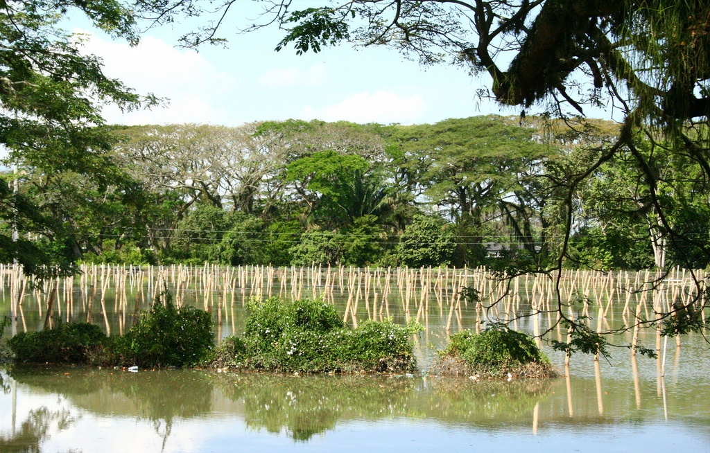

¿Cómo adaptarse a la realidad del cambio climático?
By
Steve Wilson

It is my pleasure to welcome Carmen Lacambra, one of our co-bloggers to AdaptAmericas. Carmen recently completed a Ph.D. in Geography from the University of Cambridge, UK. She also holds a MsC in Estuarine and Coastal Zone Management, at the University of Hull, UK, and a degree in biology from the Universidad de los Andes, Colombia. In addition, Carmen is the Director of Environmental Services, at Grupo Laera, in Bogóta. In this post, she blogs about the challenges of SMEs to adapt to the reality of climate change.
El cambio climático es una realidad que influye en la actividad económica de las empresas, sin importar a cual sector de la economía pertenezca. En Perú las inundaciones del 2010 afectaron fuertemente a los habitantes de Cusco y al turismo, varios turistas tuvieron que ser evacuados de la zona de Machu Picchu y durante varios meses la zona Arqueológica permaneció cerrada afectando severamente la economía de Cuzco. En Colombia, la temporada invernal 2010-2011 afectó diferentes sectores productivos, por ejemplo: cuantiosas pérdidas por la inundación de la zona franca en el departamento del Valle del Cauca; el sector ganadero al norte y centro del país con miles de hectáreas inundadas y sin estrategias o medidas para movilizar el ganado a zonas seguras; una universidad privada en Bogotá cuyo campus se ha inundado en dos ocasiones; y, una cadena de supermercados que ha tenido que reconstruir sus locales en varias zonas debido a las inundaciones, por mencionar algunos.
Impactos menos drásticos pero igual de alarmantes han sido observados por los caficultores que en los últimos 6 años no han podido colectar sus cosechas normales por el cambio en la estacionalidad climática, o los mismos supermercados cuya oferta de productos agrícolas ha cambiado por la misma razón, o la necesidad de las ciudades andinas de asegurar sus fuentes de agua en un futuro cercano.
La realidad es que el cambio climático ya no es una teoría sobre el calentamiento global y algo que va a pasar.
El cambio en las condiciones ambientales y climáticas del planeta ya se está manifestando y así como los ecosistemas naturales y especies de animales y plantas, e incluso nuestros ancestros, se han adaptado a otros cambios drásticos en las condiciones ambientales del planeta, el sector privado debe adaptarse al nuevo entorno ambiental, sin dejar de lado las estrategias de mitigación que ayudan a reducir la concentración de gases de efecto invernadero en la atmósfera.
Al hablar de sector privado nos referimos a cualquier organización de propiedad privada, desde las microempresas hasta las grandes multinacionales que realizan sus actividades en sectores clásicos de la economía: Agropecuario, Industrial y Servicios. Desde el tendero de barrio, la señora que presta servicio de manicurista y estilista, la pequeña industria familiar que puede estar ubicada en el mismo hogar donde habita la familia, la mediana empresa que produce huevo líquido o que organiza excursiones turísticas, las grandes empresas que tienen cultivos de palma de aceite o soya, o la entidad financiera cuyo cliente objetivo son las PYMES. En toda la región se pueden encontrar ejemplos de cómo el cambio climático nos está afectando a todos y como está surgiendo la necesidad de tomar medidas, para seguir creciendo económicamente bajo las nuevas condiciones climáticas y ambientales donde la incertidumbre y variabilidad climática juegan un papel muy importante.
Para cualquier gerente de una organización la primera inquietud que surgirá es, ¿a qué me debo adaptar? ¿Cuáles son y serán esas nuevas condiciones climáticas? La respuesta es: se debe adaptar a un cambio en las condiciones climáticas que conocemos. Un incremento en la temperatura atmosférica va a afectar el clima a nivel global pero también a nivel local, que es donde está la empresa o donde se suelen tomar las decisiones de adaptación. Básicamente hay tres impactos que desencadenan otra serie de consecuencias:
- cambio en la temperatura,
- cambio en el régimen de lluvias (intensidad y/o frecuencia) y
- aumento en el nivel del mar.
Para nosotros a nivel local esto podría traducirse en que las lluvias empiecen más tarde de lo usual, o que no haya veranillo, o que llueva con más intensidad pero durante menos tiempo, o que no haya lluvias, que la producción de los cultivos cambie por el cambio de la temperatura, que algunas especies polinizadoras por ejemplo no resistan el estrés de la temperatura y dejen de prestar este servicio ambiental. Impactos más drásticos podrían ser un cambio en la intensidad y frecuencia de las lluvias torrenciales, tormentas, huracanes y heladas; la inundación de zonas costeras bajas; la salinización de acuíferos; mayor erosión costera; un cambio en los ecosistemas naturales y los servicios ambientales que prestan y el acceso al agua en muchas ciudades que dependen de los ecosistemas de montaña, entre otros impactos considerados por los científicos.
Debido a que carecemos de la información necesaria es difícil predecir cómo cambiará el clima a nivel local. Así mismo, son tantas las variables que intervienen en el clima local como las montañas, los bosques, la altitud, los vientos, el fenómeno del niño, etc., que es muy difícil construir un modelo único que nos sea útil para predecir los cambios a niveles locales. En las zonas costeras sucede lo mismo con las predicciones de aumento del nivel del mar. Por tanto la respuesta al gerente sería, además de la variabilidad climática y un posible cambio en las condiciones ambientales, se debe de tener en cuenta la incertidumbre que podrá ser disminuida a medida que tengamos más información.
Existen muchos ejemplos en nuestra región de empresas con estrategias enfocadas directamente a la adaptación al cambio climático. Por ejemplo pequeños caficultores de Perú, México y Nicaragua que están desarrollando estrategias para disminuir el riesgo, mantener su producción y disminuir los impactos en la biodiversidad; en Haití un banco que protege al microempresario asegurándolo contra los desastres naturales; en el Caribe donde algunas empresas hoteleras se han unido para proporcionar a los clientes alternativas en caso de huracanes; y en Perú donde se están desarrollando micro-créditos agrarios para la pequeños agricultores afectados por fenómenos climáticos.
Así mismo surgen muchos cuestionamientos, por ejemplo, cómo afecta el cambio climático la decisión de la compra de un consumidor. ¿Compraría usted una casa en una zona que podría estar afectada por inundaciones en un futuro? ¿Compraría usted un apartamento a la orilla del mar sabiendo que en un futuro es posible que las obras de defensa costera, como los espolones, tenga que pagarlos usted? ¿De dónde vienen las frutas y verduras que consume y cuál será su disponibilidad en 5 -10 años? ¿Le importaría a usted si la cosecha de mangos se retrasa un mes o si los mangos son más pequeños? ¿Hasta que punto es beneficioso sustituir bosque nativo por maderas productivas? ¿De donde viene el agua que consume en su casa y su negocio?
El cambio climático es también una oportunidad de crecimiento, y a su vez una alerta que nos recuerda que todos somos parte de un mismo sistema, un sistema cambiante cuyo funcionamiento estamos intentando entender. Aunque no comprendamos del todo las múltiples variables relacionadas con el clima y su variabilidad, es necesario plantearnos alternativas que permitan un crecimiento económico y un desarrollo sostenible en toda la región acorde con nuestras necesidades y las de generaciones siguientes y con la preservación de la biodiversidad, así como con las condiciones ambientales cambiantes.